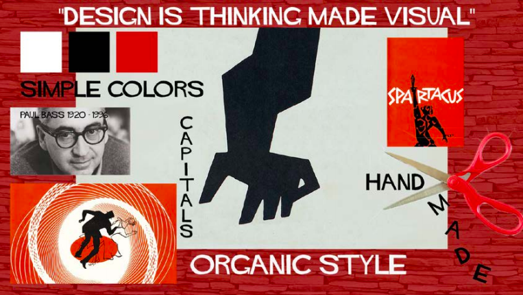
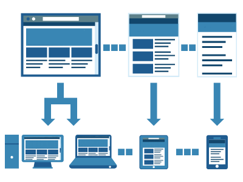

Theme 01. Basic Web

During Basic WEB I got introduced to a lot of new things, including user interface development, content creation, 5 second tests, design principles, style tiles, mood boards and much more. In those two files I documented the process and design of once, Saul Bass’s Organic Style, and second of my own website.

Using the design principles and gestalt laws I created my first responsive website. To communicate my design I choose to use my passion the ocean. Luckily a lot has changed since then ;)